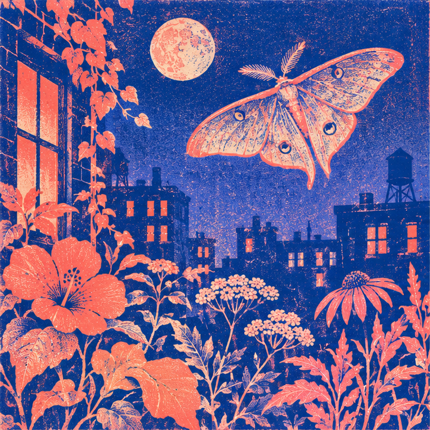
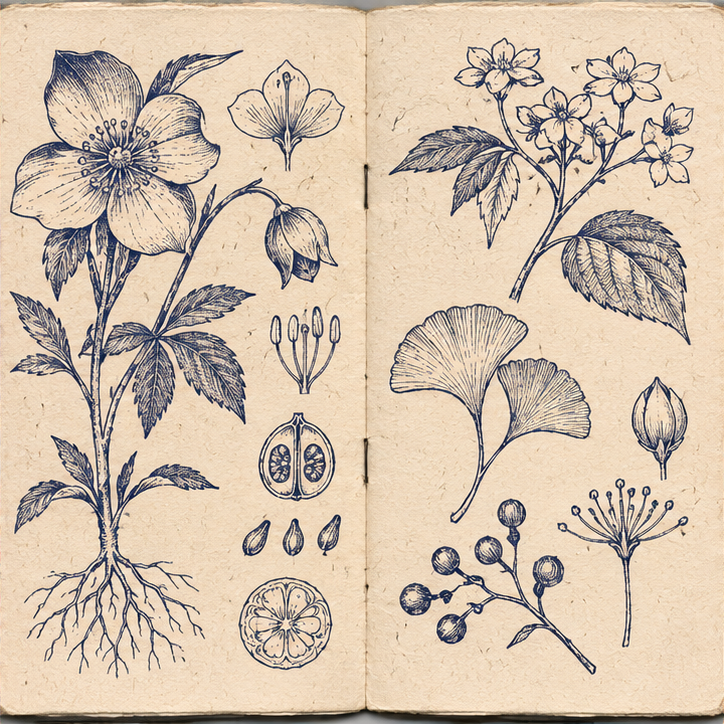
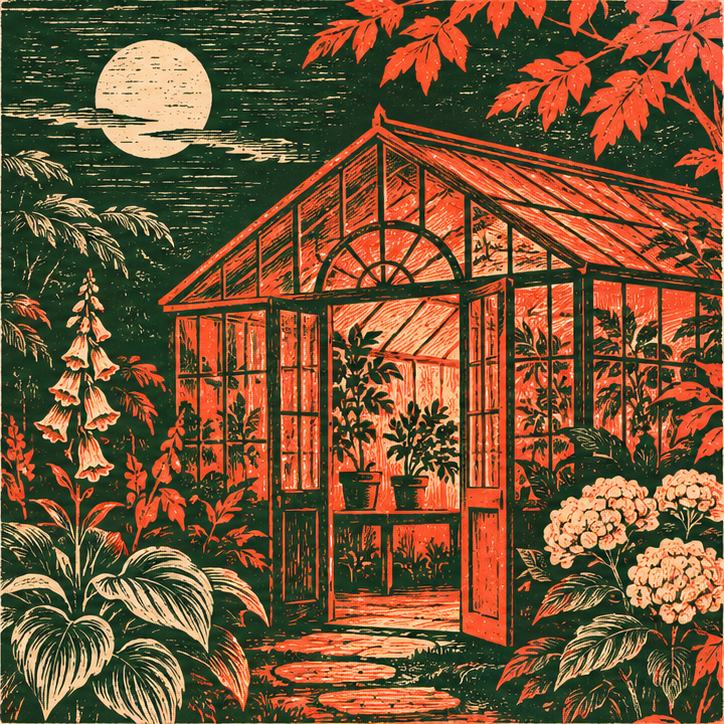

Two ink print · 2026
Night Garden
Screenprint · edition of 40
Paper Moth Press presents
A flight through a two-ink print. Scroll to move through the scene.
Skip to the portfolio ↓
Selected work · 2026

Screenprint · edition of 40

Risograph · 16 pages

Ink and carved texture
Commissions
Editorial illustration, small edition prints, and event portraits. A commission brief starts with the subject, intended use, format, and deadline.